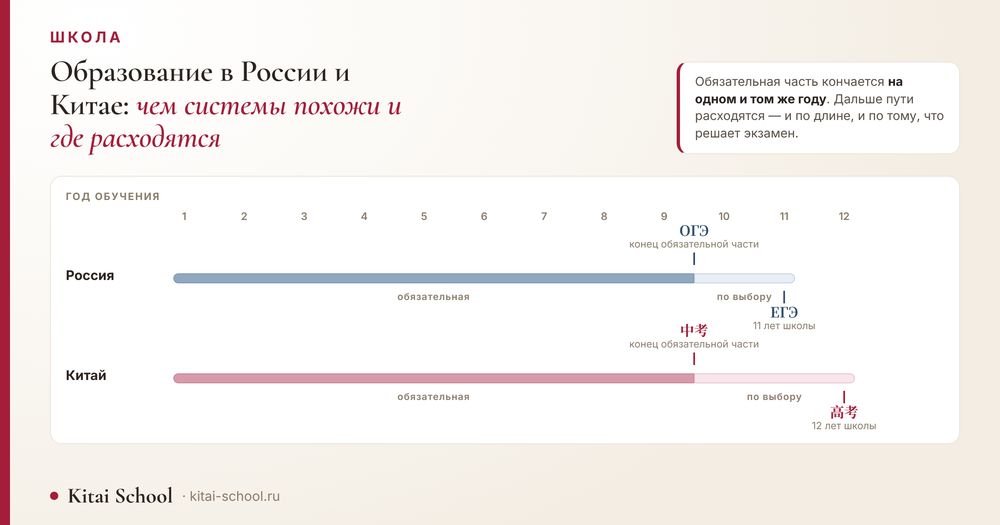
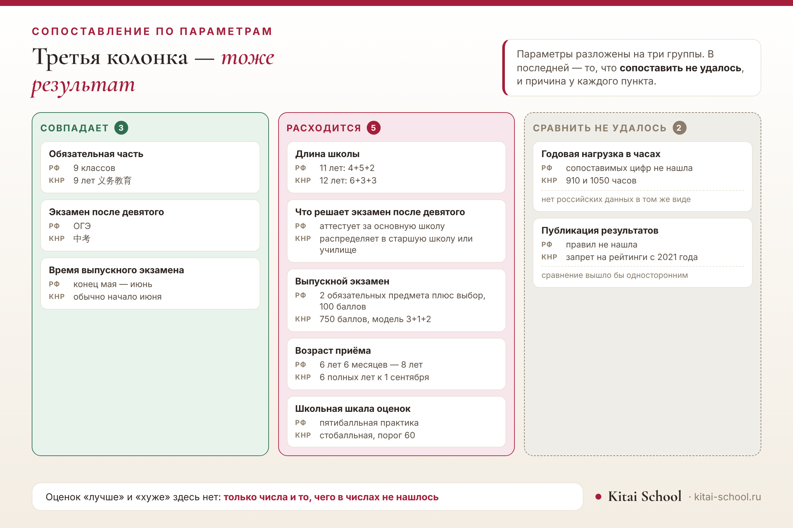

Школа
Образование в России и Китае: чем системы похожи и где принципиально расходятся


Оговорю рамки сразу. Оценивать системы и отвечать, где учиться выгоднее, я не берусь: для таких выводов нужны данные, которых у меня нет. Задача другая — положить рядом проверяемые числа по одинаковым параметрам и показать, где они совпадают, где расходятся и где сравнение не получилось. Последнее тоже результат, и я его не прячу.
Обязательная часть у обеих школ кончается на девятом году. Дальше расходится: российская школа длится одиннадцать лет, китайская — двенадцать, а экзамен после девятого класса в России аттестует, в Китае — распределяет. Из 10 параметров совпали 3, разошлись 5, а 2 сопоставить не удалось.
Короткий ответ: ступени похожи, развилки — нет
Если положить две схемы рядом, первое впечатление будет обманчивым.
Обе системы делятся на три ступени. В обеих есть экзамен после девятого года и выпускной экзамен в конце. В обеих обязательная часть заканчивается на одном и том же месте — после девятого класса.
А дальше начинаются различия, и они не в числах, а в том, что эти числа значат. Экзамен после девятого класса в России открывает выбор, в Китае — его сужает. Выпускной экзамен в России складывается из предметов по выбору, в Китае считается одной суммой на 750 баллов.
Дальше разберём по параметрам, и начнём с самого простого — со счёта лет.
Сколько лет длится школа
Одиннадцать и двенадцать — вот всё различие в итоговом числе.
В России три уровня общего образования: начальное с первого по четвёртый класс, основное с пятого по девятый и среднее — десятый с одиннадцатым. Схему можно записать как 4+5+2.
В Китае двенадцать лет по схеме 6+3+3: шесть лет начальной школы, три средней и три старшей. Лишний год приходится на начальную школу — она длиннее российской на два года, а основная, наоборот, короче.
Отсюда любопытное следствие: к концу девятого года обучения дети в обеих странах примерно одного возраста, хотя распределены по ступеням по-разному.
Возраст приёма тоже близок, но правила сформулированы по-разному. В России в первый класс принимают с шести лет шести месяцев и не позже восьми, а вне этих границ нужно разрешение учредителя школы. В Китае закон требует шести полных лет к первому сентября, с возможной отсрочкой.
Где заканчивается обязательная часть
Это самое точное совпадение из всех, что мне удалось найти.
В России обязательным является основное общее образование — девять классов. Десятый и одиннадцатый классы в обязательную часть не входят.
В Китае обязательные первые девять лет называются 义务教育, и старшая школа 高中 в них тоже не входит.
То есть обе системы устроили границу в одном и том же месте: девять лет учат всех, дальше начинается выбор. Подробный разбор китайских ступеней — в нашей отдельной статье о том, сколько классов учатся в Китае.
Но за одинаковой границей стоят разные механизмы перехода, и вот это уже принципиально.
Сопоставление по параметрам: сводка
Соберём всё, что удалось проверить, в одну таблицу.
| Параметр | Россия | Китай | Результат |
|---|---|---|---|
| Обязательная часть | 9 классов | 9 лет 义务教育 | совпадает |
| Экзамен после девятого | ОГЭ | 中考 | совпадает |
| Время выпускного экзамена | конец мая — июнь | обычно начало июня | совпадает |
| Длина школы | 11 лет: 4+5+2 | 12 лет: 6+3+3 | расходится |
| Что решает экзамен после девятого | аттестует за основную школу | распределяет в старшую школу или училище | расходится |
| Выпускной экзамен | 2 обязательных предмета плюс выбор, 100 баллов | 750 баллов, модель 3+1+2 | расходится |
| Возраст приёма | 6 лет 6 месяцев — 8 лет | 6 полных лет к 1 сентября | расходится |
| Школьная шкала оценок | пятибалльная практика | стобалльная, порог 60 | расходится |
| Годовая нагрузка в часах | сопоставимых цифр не нашла | 910 и 1050 часов | сравнить не удалось: нет российских данных в том же виде |
| Публикация результатов | правил не нашла | запрет на рейтинги с 2021 года | сравнить не удалось: сравнение вышло бы односторонним |
Последний столбец и есть устройство статьи: 3 параметра совпали, 5 разошлись, 2 сравнить не вышло.

Обратите внимание на среднюю колонку: она самая длинная. Совпадений меньше, чем различий, и это при том, что внешне схемы выглядят похоже.
А правая колонка — честная часть работы. Там два параметра, по которым я нашла данные только с одной стороны, и выдавать это за сравнение не стала.
Экзамен после девятого: ОГЭ и 中考
Оба экзамена стоят в одной точке пути, но делают разное.
ОГЭ — это государственная итоговая аттестация за основную школу. Он подтверждает, что девять классов пройдены. После него ученик может остаться в школе и пойти в десятый класс или уйти в колледж.
中考 распределяет. По его результатам ученика направляют либо в старшую школу 高中, либо в профессиональное училище. Это не формальность в конце ступени, а момент, который определяет следующие три года.
Отсюда и разное отношение к этому возрасту. В российской школе девятый класс — промежуточная точка, после которой большинство остаётся учиться дальше. В китайской это развилка, к которой готовятся заранее.
Для семьи, которая переезжает, разница существенная: если подростку четырнадцать, в Китае он попадает в год перед экзаменом, а не в спокойную середину школы.
Семья переезжала в Китай, и родителей волновал один вопрос: в какой класс пойдёт сын.
Мальчику четырнадцать, в России он закончил седьмой. По годам всё сходилось: в Китае он идёт в восьмой, то есть во второй год средней школы 初中.
А дальше выяснилось главное. Через год ему предстоит 中考 — экзамен после девятого класса, от которого зависит, попадёт ли он в старшую школу.
В российской школе этот возраст родители воспринимали как спокойный: до выпускных экзаменов далеко, можно спокойно учиться. Здесь он оказался годом перед развилкой.
Пришлось перестраивать не класс, а планы: подтягивать язык не «вообще», а под предметы, которые будут на экзамене.
С тех пор я советую семьям с переездом смотреть не только на то, в какой класс попадает ребёнок, но и на то, что в этом классе происходит.
Эта история — лучшая иллюстрация к тому, зачем вообще сравнивать системы. Совпадение по годам не означает совпадения по тому, что в эти годы происходит.
Экзамен на выходе: ЕГЭ и 高考
Здесь различается почти всё, кроме времени года.
ЕГЭ собирается из предметов. Два обязательных — русский язык и математика, остальные сдают по выбору, в зависимости от того, куда поступают. Каждый предмет оценивается отдельно по стобалльной шкале.
Гаокао считается одной суммой. Максимум — 750 баллов, и собираются они по модели 3+1+2: три обязательных предмета, один по выбору из двух направлений и два дополнительных. Подробный разбор того, как эти баллы складываются и пересчитываются, у нас есть отдельно: как ставят оценки в Китае.
Сроки при этом похожи: основной период ЕГЭ приходится на конец мая и июнь, гаокао обычно сдают в начале июня. Правда, порядок проведения гаокао различается по провинциям — единого для всей страны расписания предметов нет.
Чего я не привожу: минимальных баллов и точных дат. Они меняются каждый год, последние найденные относятся к две тысячи двадцать пятому году и уже устарели. Для актуальных цифр нужно смотреть официальные документы текущего года.
Оценки и публикация результатов
Параметр, по которому сравнение получилось наполовину.
В Китае школьная шкала стобалльная — 百分制. Максимум за предмет сто, чертой считается шестьдесят, и рядом с числом обычно стоит словесная ступень: их пять, от высшей до неудовлетворительной.
В России привычна пятибалльная. Здесь нужна оговорка: федерального требования к самой шкале оценивания я не нашла, поэтому говорю о сложившейся практике, а не о норме.
И отдельно про рейтинги. С 2021 года в китайской обязательной школе запрещено публиковать результаты и составлять рейтинги учеников. По российской школе правил публикации я не нашла, поэтому сравнивать здесь не с чем — параметр попал в третью корзину.
О том, как устроены школьные правила в Китае вообще — форма, распорядок, что можно приносить, — у нас есть отдельный разбор: правила в китайских школах.
Нагрузка: что удалось сопоставить, а что нет
Самый спрашиваемый параметр — и самый трудный для честного сравнения.
По китайской школе цифры есть. Государственный стандарт задаёт годовые часы: 910 часов в первом и втором классах, 1050 в третьем — шестом, всего 9522 часа за девять лет обязательной школы.
По российской школе сопоставимых цифр я не нашла. Есть данные о недельной нагрузке, но положить их рядом с годовыми часами без пересчёта нельзя, а пересчитывать самой — значит получить число, за которое никто не отвечает.
Поэтому ответа «где нагрузка выше» в этой статье нет. Есть одна сторона с числами и вторая без них, и выдавать это за сравнение я не буду.
То же касается и домашних заданий, и дополнительных занятий: сопоставимых данных по обеим странам найти не удалось.
Что из этого следует для семьи с переездом
Три практических вывода, которые следуют прямо из таблицы.
- Считайте не класс, а расстояние до развилки. Ребёнок попадает в класс по возрасту, но важнее, сколько лет остаётся до 中考.
- Учитывайте лишний год. Китайская школа на год длиннее, и выпускается ребёнок на год позже, чем выпустился бы дома.
- Язык нужен не «вообще», а под предметы. Если до экзамена остаётся год или два, учить придётся лексику школьных дисциплин, а не бытовую речь.
Что делать подростку, который заканчивает девятый или одиннадцатый класс в России и смотрит в сторону Китая, у нас разобрано отдельно: обучение в Китае после 9 класса и обучение в Китае после 11 класса.
Чего в статье нет намеренно
- Нет оценок «лучше» и «хуже». Ни одна из систем здесь не названа удачнее другой: статья сопоставляет устройство.
- Нет выводов о качестве образования и сравнений результатов: это отдельная тема, требующая данных, которых у меня нет.
- Нет российских годовых часов — сопоставимых цифр найти не удалось, и параметр остался несравнённым.
- Нет минимальных баллов и точных дат экзаменов: они меняются ежегодно.
- Нет реконструкции «логики каждой системы» — объяснять, почему устроено именно так, значило бы домысливать.
- Нет подробностей китайской части — устройство ступеней, пересчёт баллов, доли часов по предметам разобраны в отдельных статьях, на которые стоят ссылки.
И главный вывод, ради которого всё раскладывалось. Похожими системы делает внешняя схема, разными — то, что происходит в точках перехода.
Польза простая: дальше, встретив утверждение вроде «в Китае учатся на год дольше» или «там всё решает один экзамен», вы сможете проверить его по таблице — и увидеть, что стоит за словами.
Если в планах переезд или учёба в Китае, язык лучше начинать заранее — и сразу под задачу: онлайн-курсы китайского. Оставить заявку или написать нам в Telegram.
Частые вопросы (FAQ)
Сколько лет учатся в школе в России и Китае?
В России одиннадцать лет: начальная школа с первого по четвёртый класс, основная с пятого по девятый и старшая десятый с одиннадцатым. В Китае двенадцать: шесть лет начальной, три средней и три старшей — схему записывают как 6+3+3. Разница в один год приходится на начальную школу: в Китае она длиннее.
Где заканчивается обязательное образование в каждой стране?
В обеих — после девятого года обучения. В России обязательным является основное общее образование, то есть девять классов. В Китае обязательные первые девять лет называются 义务教育, а старшая школа в них не входит. Это, пожалуй, самое точное совпадение между системами.
Что решает экзамен после девятого класса?
Здесь системы расходятся. В России ОГЭ — это государственная итоговая аттестация за основную школу; после него ученик может пойти в десятый класс или в колледж. В Китае 中考 распределяет: по его результатам ученика направляют либо в старшую школу, либо в профессиональное училище, и этот выбор сделать заново сложно.
Чем гаокао отличается от ЕГЭ?
Набором и шкалой. В ЕГЭ два обязательных предмета — русский язык и математика, остальные сдают по выбору, и каждый предмет оценивается по стобалльной шкале. Гаокао считается суммарно: 750 баллов в модели 3+1+2. Сроки при этом похожи: основной период ЕГЭ приходится на конец мая и июнь, гаокао обычно сдают в начале июня.
Как в Китае ставят оценки?
Шкала там стобалльная, 百分制: максимум за предмет сто, а чертой считается шестьдесят. Рядом с числом обычно стоит и словесная ступень, их пять. Отдельно стоит знать, что с 2021 года в обязательной школе запрещено публиковать результаты и составлять рейтинги учеников. Устройство этой шкалы у нас разобрано в отдельной статье.
Где нагрузка выше?
Ответа в числах я не даю. По китайской школе есть государственный стандарт с годовыми часами: 910 часов в первом и втором классах, 1050 в третьем — шестом. Российских данных в том же виде, чтобы положить рядом и сравнить, я не нашла, а сопоставлять часы с недельными уроками некорректно.
Пусть решение принимается по числам, а не по пересказам! 加油！
Источники
- Уровни общего образования в России — начальное, основное и среднее — и обязательность основного общего образования: по закону «Об образовании в Российской Федерации» № 273-ФЗ.
- Возраст приёма в первый класс — с шести лет шести месяцев и не позже восьми, вне этих границ с разрешения учредителя: там же, статья 67, и порядок приёма Минпросвещения.
- Состав ЕГЭ — два обязательных предмета, остальные по выбору, стобалльная шкала — и основной период в конце мая и июне: по открытым описаниям порядка аттестации.
- Китайские ступени 6+3+3, обязательные девять лет 义务教育 и 中考 как распределяющий экзамен — по нашему разбору китайских классов, сверенному при его написании.
- Состав гаокао — 750 баллов в модели 3+1+2 — и школьная стобалльная шкала с порогом 60, а также запрет на публикацию результатов и рейтингов с 2021 года: по нашему разбору китайских оценок.
- Годовые часы китайской школы — 910, 1050 и 9522 за девять лет — по государственному стандарту, разобранному в нашей статье о том, как учатся китайские школьники.
- Сроки гаокао — обычно начало июня, порядок различается по провинциям — оттуда же.
- Российские годовые часы по предметам и правила публикации оценок не приводятся: сопоставимых данных найти не удалось, и оба параметра прямо названы несравнёнными.
- Минимальные баллы и точные даты экзаменов не приводятся: они меняются ежегодно.
- Случай с переездом — из занятий Kitai School; имени и города не называю.